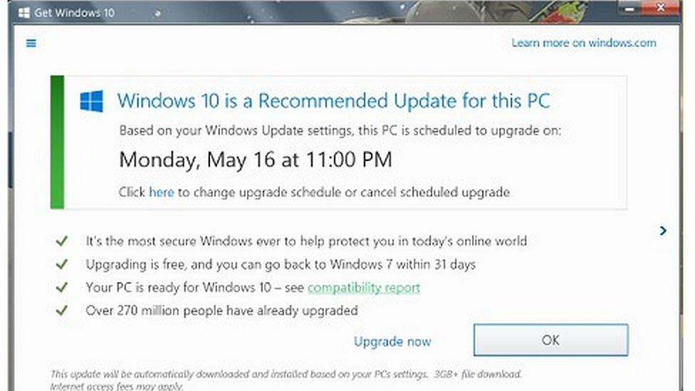

Bait and Switch
What is the dark pattern?
The interface promises one outcome but delivers another. A button or action appears to do something familiar, then suddenly triggers an unexpected result that benefits the business instead of the user.
Example
When Windows customers tried to close a pop-up asking them to upgrade the software—but discovered that the ‘close’ button triggered an immediate software update.
Why is it harmful?
Bait and switch undermines one of the core foundations of usability: predictable outcomes. Users rely on interface conventions to make quick, confident decisions, and this pattern weaponizes that trust. When an action produces a different result than promised, people lose their sense of control and may experience real consequences such as unwanted purchases, security risks, or wasted time. It teaches users to be suspicious of interfaces in general, contributing to a more hostile and anxious digital environment.
What is the Ethical Alternative?
Match actions with honest labels and predictable outcomes. Example: Buttons that clearly state “Install Partner App” versus “Download My File,” with no visual deception.
Design principles to prevent it:
Follow the principle of mapping—actions must clearly correspond to results. Labels, visuals, and interaction patterns should reflect exactly what will happen next. Use plain language, accurate affordances, and preview states so users can make informed decisions without guesswork. Ethical design prioritizes expectation over persuasion.